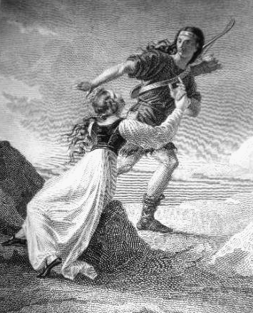

Persiles avista Roma was commissioned as part of the commemorative events set to homage Cervantes on his 4th Centenary.
The composer was inspired by one of the sonnets included in "Los trabajos de Persiles and Segismunda", which was the last novel written by Cervantes, posthumous published in 1617.
Marco's composition is built as a formal dialogue between the structure of the sonnet - taken with a flexible perspective - and its musical expression.
The music score is written for baritone and violin solists which interact as a "duo concertante".
Marco's composition proposes a contemporary musical view of Cervantes text, which has an eternal life cryistallized in a mythical present.
